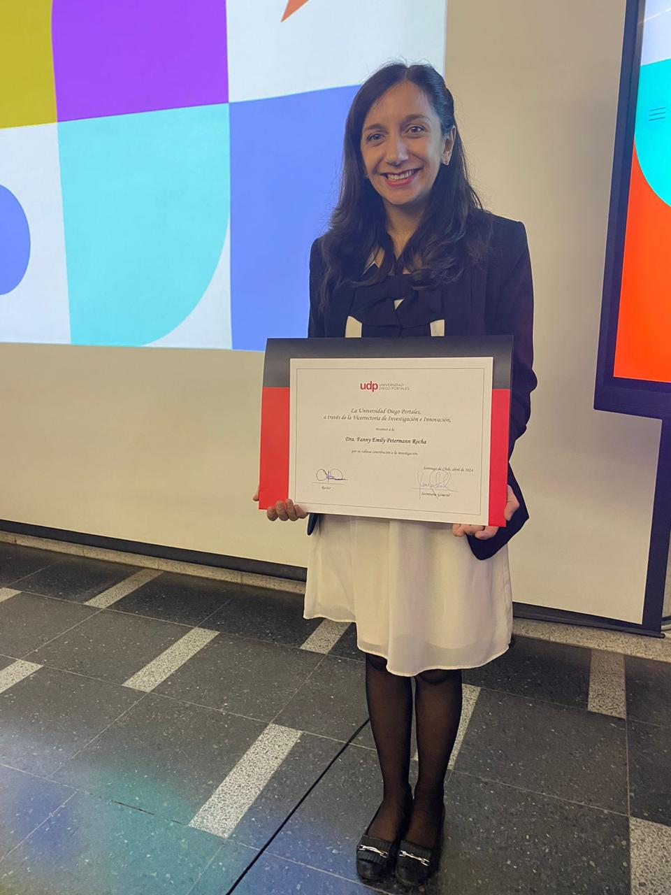

International Impact
Top 2% Most-Cited Scientists Worldwide
Stanford / Elsevier
2024 & 2025Scientific recognition reflecting the impact, quality and international reach of Fanny’s academic work.

Stanford University / Elsevier
2024 · 2025
Recognised among the world’s most influential scientists.
Stanford / Elsevier
2024 & 2025Journal of Cachexia, Sarcopenia and Muscle
2023Best graduate
2013Global prevalence of sarcopenia and severe sarcopenia: a systematic review and meta-analysis
Journal of Cachexia, Sarcopenia and Muscle
Maturitas
Vegetarians, fish, poultry, and meat-eaters: who has higher risk of cardiovascular disease incidence and mortality?
European Heart Journal
Stanford University / Elsevier
Stanford University / Elsevier
Journal of Cachexia, Sarcopenia and Muscle
Maturitas
European Heart Journal
Academic Excellence
Interested in research collaboration, academic partnerships
or
international opportunities?